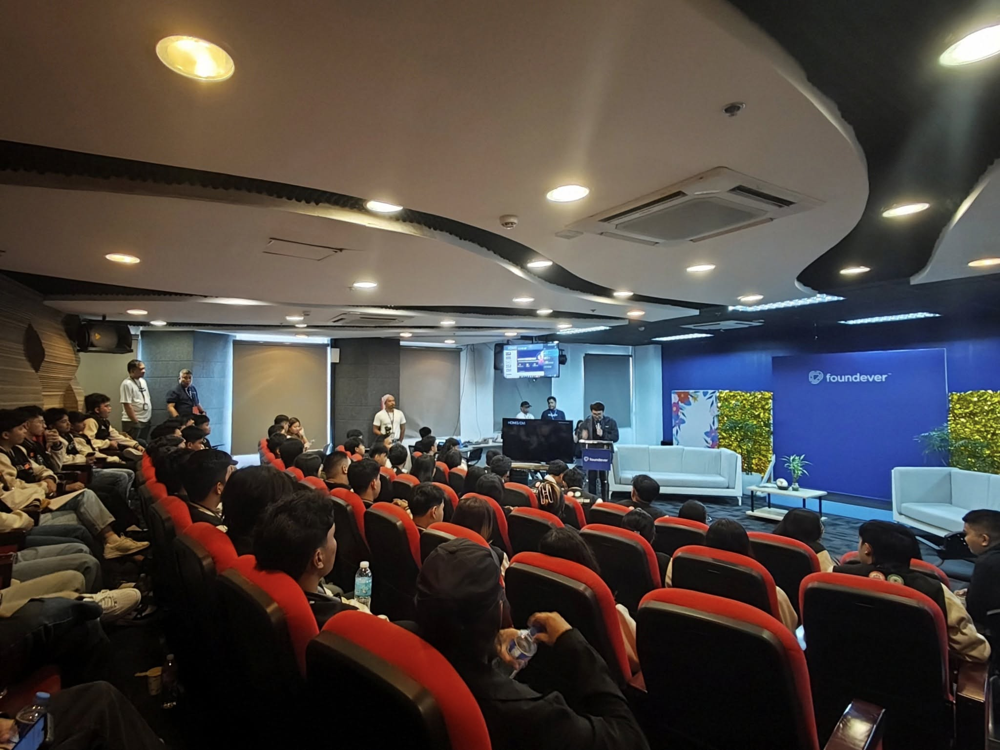
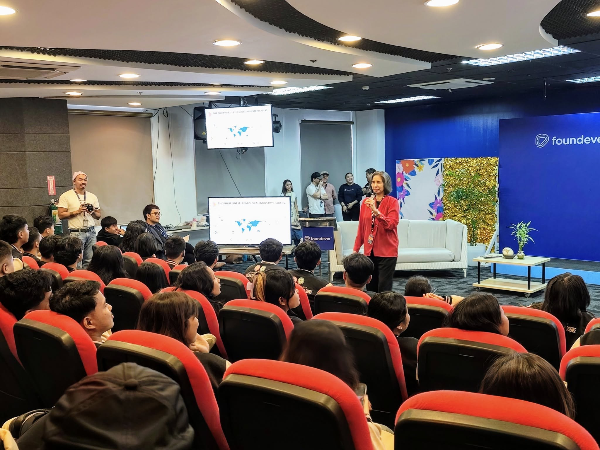
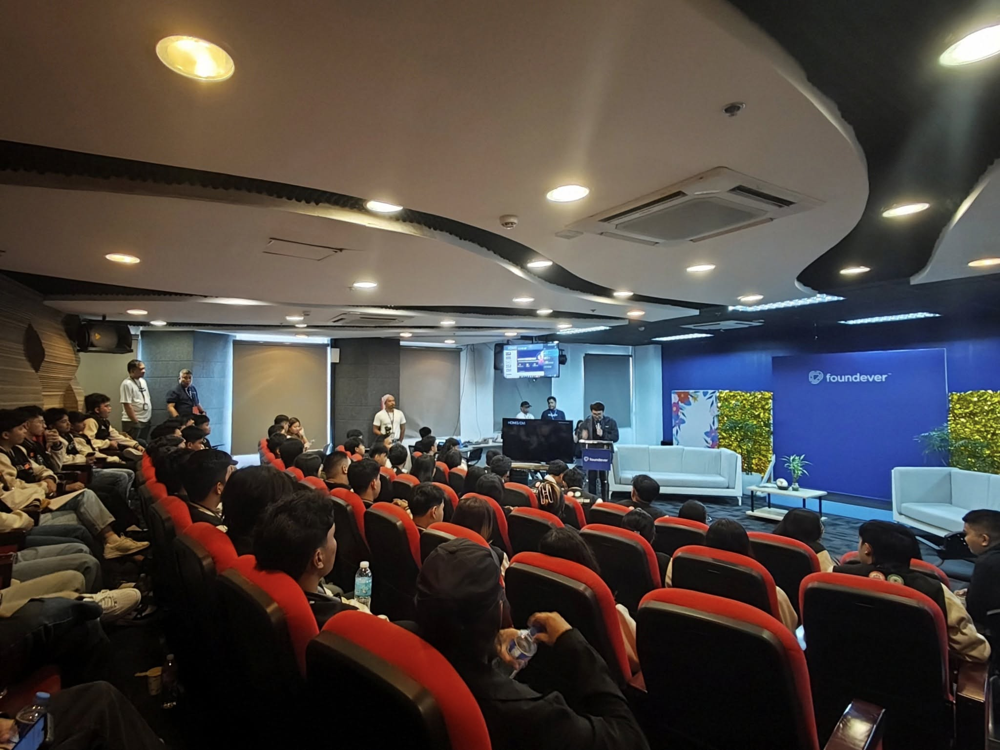
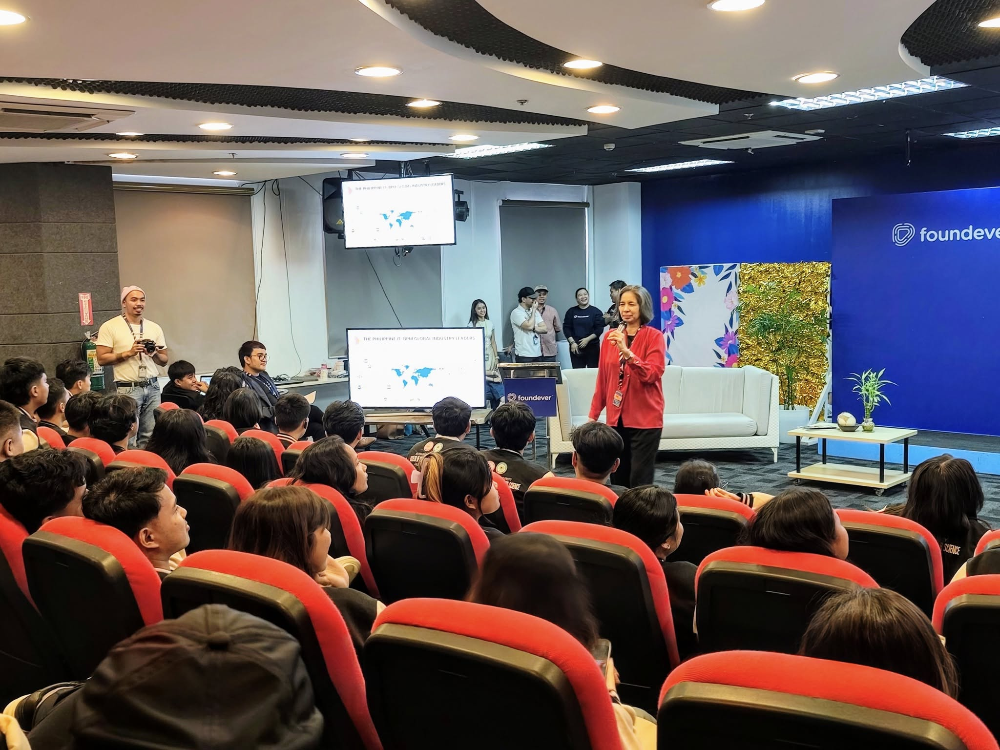

Inside Foundever PH
On June 9, 2025, we, the BSCS students from WMSU, visited Foundever PH in Pasig City. This trip helped us learn about real-world tech jobs. Foundever is a big company that helps other businesses talk to their customers using smart tech like AI and cloud computing.
We saw how their teams use different tech tools to handle many customer calls and messages. We learned about customer service, digital changes, keeping data private, and how they work in quick, flexible teams.
My Personal Insights
Visiting Foundever was super interesting! It showed me how huge customer service is. As a Frontend Developer and UI Designer, I noticed how important user-friendly tools and strong systems are for their staff. It was cool to see how tech helps make customers happy on such a big scale.
Learning About the Industry from IBPAP
Ms. Zoe Diaz De Rivera from IBPAP gave us a great overview of the IT-BPM industry in the Philippines. She talked about new trends, job openings, and how our country is a big leader in this field. This industry is a huge part of the Philippine economy, employing over 1.7 million people.
New tech like AI and automation are creating exciting jobs in data analysis, software, and cybersecurity. Ms. Diaz De Rivera stressed that companies also look for good communication, critical thinking, and adaptability. She told us to build online portfolios and get internships to be ready for these jobs.
What This Tour Mean To Us
“This visit helped me realize how broad the opportunities are in the IT-BPM sector. It’s not just about call centers—it’s about innovation and technology,” said one of my fellow BSCS students. “Foundever and IBPAP opened our eyes to the possibilities that await us.”
The tour helped connect our school with the tech world. WMSU is helping us become skilled and ready for the future. Trips like this make sure we understand what the industry needs and the latest tech trends.
Moments From Our Visit
 


